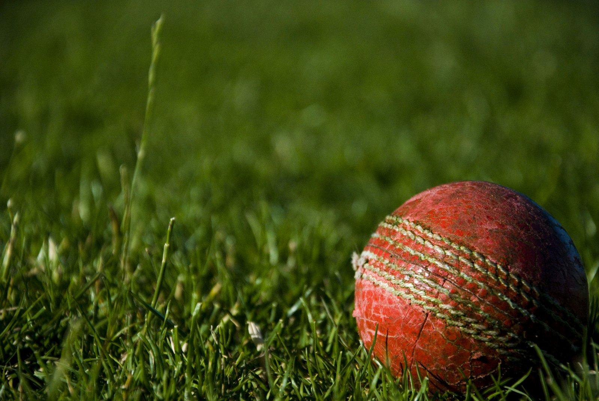

Leather bats.
English and Kashmir willow bats for the hard ball, pressed and shaped by hand. Every bat ships oiled, and you can add full knocking-in at checkout.
Which grade of willow?
- Grade 1 English
- Straight, even grains with few marks. The best-performing willow, used for match bats.
- Grade 2 English
- The same wood with a few more marks or a slightly wider grain. Plays almost as well and costs much less.
- Grade 3 English
- More marks and wider grains. Good for club players moving up to the hard ball.
- Kashmir willow
- Harder and heavier than English willow, and very hard-wearing. A sensible bat for the nets.